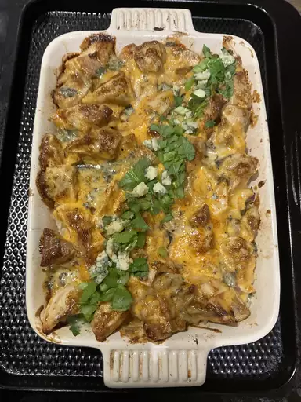

Buffalo Chicken Dynamite Rice

This Buffalo Chicken Wing inspired twist on Dynamite Rice sushi
rolls is a great budget-friendly family meal or crowd-pleaser for your next football party!
Prep Time: 30 mins
Cook Time: 65 mins
Total Time: 95 mins
Servings: 6
Ingredients
- 6 boneless, skinless chicken thighs
- 2 tablespoons melted butter
- salt to taste
- ⅔ cup mayonnaise
- 3 tablespoons hot pepper sauce (such as Frank's RedHot®)
- 1 teaspoon cayenne pepper, or more to taste
- ½ teaspoon paprika
- ¼ teaspoon garlic powder
- ¼ teaspoon freshly ground black pepper
- 1 tablespoon white vinegar
- 1 cup long grain rice, cooked according to package directions
- 1 cup diced celery, divided
- ½ cup crumbled blue cheese, divided
Steps
- Preheat the oven to 400 degrees F (200 degrees C).
- Add chicken thighs and melted butter to a baking dish, and toss until coated. Season the top with salt.
- Bake in the preheated oven until chicken is just cooked through, about 20 minutes.
- While chicken is cooking, make sauce by adding mayonnaise, hot sauce, cayenne pepper, paprika, garlic powder, black pepper and white vinegar to a mixing bowl. Whisk together, and refrigerate until ready to use.
- Remove cooked chicken from the oven. Transfer thighs to a plate or bowl, and place in the fridge until needed. Reserve all the juices and drippings from the casserole dish, and pour into a measuring cup. Add enough water to get to 1 2/3 cups.
- Bring water-drippings mixture and rice to a boil in a saucepan. Reduce heat to medium-low, cover, and simmer until rice is tender and water has been absorbed, about 15 minutes. Turn off heat and allow rice to sit for 10 minutes longer.
- Transfer cooked rice to the baking dish used to bake the chicken. Use a spoon to create an even layer, but do not pack or press rice down. Drizzle any accumulated sauce from the cooked chicken over the rice.
- Transfer chicken to a cutting board and cut into 1/2-inch cubes. Add chicken to the mayo sauce and mix well. Sprinkle 1/2 of the celery over the rice. Spread out chicken-mayo mixture evenly over the rice. Crumble over about 1/2 of the blue cheese and season with some cayenne on top, if desired.
- Preheat the oven to 450 degrees F (230 degrees C).
- Place baking dish in the preheated oven and cook until the top starts to brown, 15 to 20 minutes. For additional browning, set broiler to high, and broil top for 1 to 2 minutes to achieve more color. Garnish top with the rest of the celery, more blue cheese if desired, and another drizzle of hot sauce. Top with celery leaves if available. Serve hot, or at room temp.
return to main page